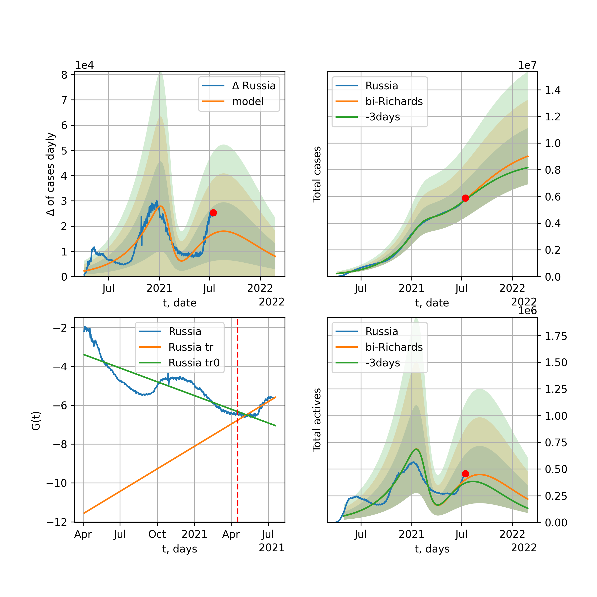
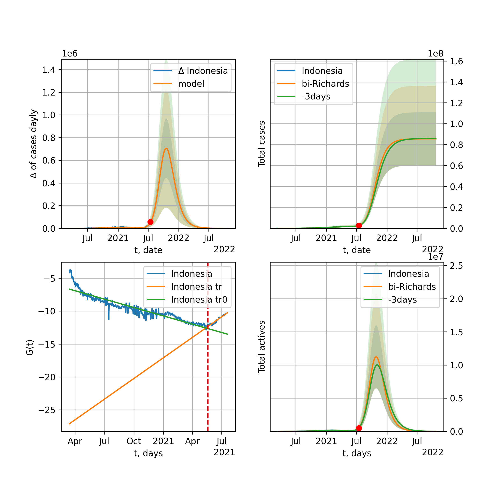
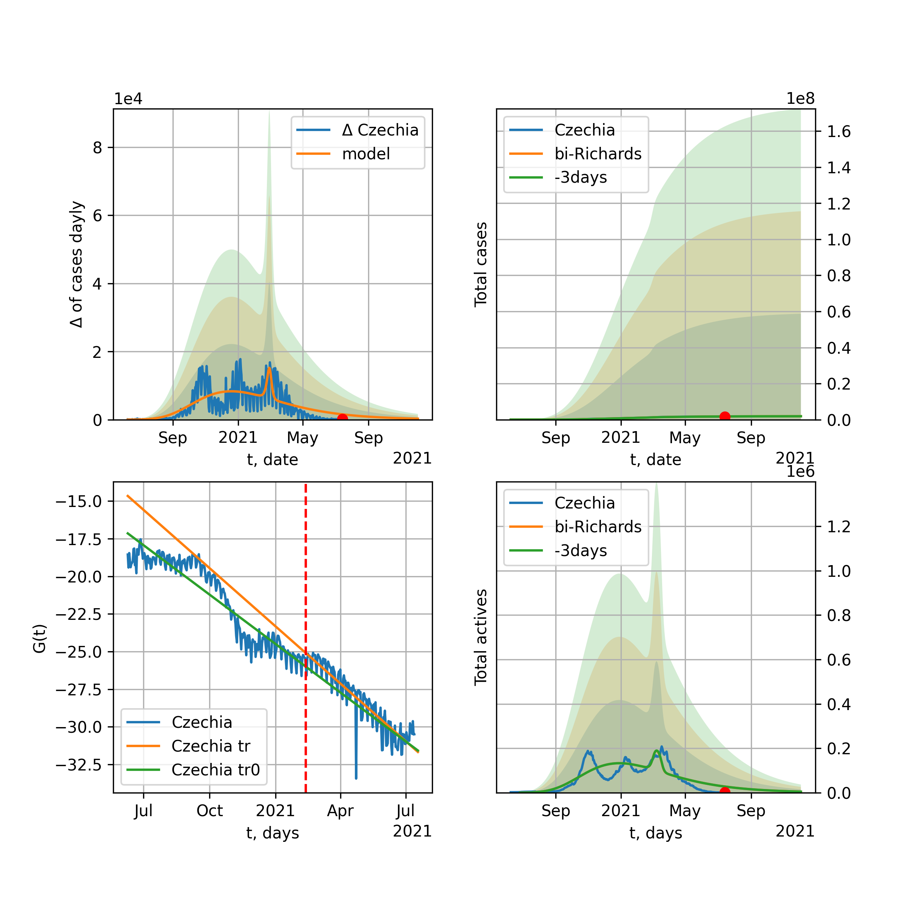

Multi-logistic model of COVID-19 dynamics
Model, code, results
Project maintained by algmaknick Hosted on GitHub Pages — Theme by mattgraham
World

World data at: 2020-05-25
+3 day model MAPE: 0.020570
model: bi-Richards
coeffs: [ 7.39575726e+06 2.84064329e+00 -4.30647080e+01 1.19749613e-02]
S.Korea scenario coeffs: [0.36242246, 2.56241634, 1.84890887, 0.13324732]
rational stdev: 0.247977
forecast at the end of period: +482 days
deltaDaycases: 5889
total cases: 9845723 ± 2441510
total death: 612732 ± 455829
bi-Richards approximation splitting point: 55
trend coefficient of determination: 0.357890
intercept: -1.920602
slope: -0.041615
trend coefficient of determination: 0.923061
intercept: -0.697726
slope: -0.030858
European Union

European Union data at: 2020-05-25
+3 day model MAPE: 0.008616
model: logisticQ
coeffs: [ 1.13197754e+06 5.15445774e-07 5.07636661e+01 -2.07801675e+05]
S.Korea scenario coeffs: [0.35416971, 0.02606324, 4.35859408, 19.30413219]
rational stdev: 0.426027
forecast at the end of period: +257 days
deltaDaycases: 15
total cases: 1532608 ± 652932
total death: 161607 ± 206546
trend coefficient of determination: 0.989142
intercept_: -3.14278506891295
coeffs_: [ 0. -0.3179883 0.00156097]
USA

USA data at: 2020-05-25
+3 day model MAPE: 0.011495
model: Richards
coeffs: [ 2.02347896e+06 4.35202728e+00 -6.05639021e+01 1.03691117e-02]
S.Korea scenario coeffs: [0.36242246, 2.56241634, 1.84890887, 0.13324732]
rational stdev: 0.342558
forecast at the end of period: +474 days
deltaDaycases: 293
total cases: 2737653 ± 937805
total death: 160137 ± 164568
trend coefficient of determination: 0.953717
intercept: -1.035740
slope: -0.044701
Spain

Spain data at: 2020-05-25
+3 day model MAPE: 0.002952
model: Richards
coeffs: [ 2.90928500e+05 9.45653118e+00 -5.24826533e+01 6.54766831e-03]
S.Korea scenario coeffs: [0.36242246, 2.56241634, 1.84890887, 0.13324732]
rational stdev: 0.233449
forecast at the end of period: +292 days
deltaDaycases: 118
total cases: 390683 ± 91204
total death: 37116 ± 25994
trend coefficient of determination: 0.952160
intercept: -0.706877
slope: -0.060858
Italy

Italy data at: 2020-05-25
+3 day model MAPE: 0.001311
model: Richards
coeffs: [ 2.36123947e+05 6.32401251e+00 -5.18089055e+01 9.47300722e-03]
S.Korea scenario coeffs: [0.36242246, 2.56241634, 1.84890887, 0.13324732]
rational stdev: 0.069677
forecast at the end of period: +264 days
deltaDaycases: 146
total cases: 314298 ± 21899
total death: 44896 ± 9384
trend coefficient of determination: 0.984799
intercept: -1.075149
slope: -0.057296
United Kingdom

United Kingdom data at: 2020-05-25
+3 day model MAPE: 0.002716
model: Richards
coeffs: [ 3.11938022e+05 3.77899586e+00 -5.93457500e+01 1.25517602e-02]
S.Korea scenario coeffs: [0.36242246, 2.56241634, 1.84890887, 0.13324732]
rational stdev: 0.127914
forecast at the end of period: +362 days
deltaDaycases: 157
total cases: 414842 ± 53064
total death: 58631 ± 22499
trend coefficient of determination: 0.958031
intercept: -1.382006
slope: -0.045913
France

France data at: 2020-05-25
+3 day model MAPE: 0.003022
model: Richards
coeffs: [1.81043578e+05 3.83320283e-01 1.75031923e+01 2.55285527e-01]
S.Korea scenario coeffs: [0.36242246, 2.56241634, 1.84890887, 0.13324732]
rational stdev: 0.380196
forecast at the end of period: +124 days
deltaDaycases: 175
total cases: 241261 ± 91726
total death: 37495 ± 42766
trend coefficient of determination: 0.946724
intercept: -2.248873
slope: -0.086448
Germany

Germany data at: 2020-05-25
+3 day model MAPE: 0.004001
model: Richards
coeffs: [ 1.78726281e+05 9.30274925e+00 -4.16595350e+01 8.70832252e-03]
S.Korea scenario coeffs: [0.36242246, 2.56241634, 1.84890887, 0.13324732]
rational stdev: 0.469409
forecast at the end of period: +194 days
deltaDaycases: 108
total cases: 239515 ± 112430
total death: 11165 ± 15722
trend coefficient of determination: 0.957867
intercept: -1.195689
slope: -0.066343
Turkey

Turkey data at: 2020-05-25
+3 day model MAPE: 0.006806
model: Richards
coeffs: [ 1.62336955e+05 7.27706045e+00 -3.85705438e+01 9.84205712e-03]
S.Korea scenario coeffs: [0.36242246, 2.56241634, 1.84890887, 0.13324732]
rational stdev: 0.239591
forecast at the end of period: +196 days
deltaDaycases: 246
total cases: 210053 ± 50326
total death: 5815 ± 4179
trend coefficient of determination: 0.783447
intercept: -0.972751
slope: -0.057860
Russia

Russia data at: 2020-05-25
+3 day model MAPE: 0.000396
model: Richards
coeffs: [5.03954876e+05 1.75785671e-01 2.94828187e+01 3.83320509e-01]
S.Korea scenario coeffs: [0.36242246, 2.56241634, 1.84890887, 0.13324732]
rational stdev: 0.178091
forecast at the end of period: +222 days
deltaDaycases: 413
total cases: 667732 ± 118917
total death: 6863 ± 3666
trend coefficient of determination: 0.986864
intercept: -4.063194
slope: -0.072838
Iran

Iran data at: 2020-05-25
+3 day model MAPE: 0.004592
model: bi-Richards
coeffs: [7.33113544e+04 3.24695395e+00 3.33261067e+01 2.31349010e-02]
S.Korea scenario coeffs: [0.36242246, 2.56241634, 1.84890887, 0.13324732]
rational stdev: 0.303604
forecast at the end of period: +306 days
deltaDaycases: 41
total cases: 200702 ± 60934
total death: 10858 ± 9889
bi-Richards approximation splitting point: 75
trend coefficient of determination: 0.949163
intercept: -0.985470
slope: -0.056239
trend coefficient of determination: 0.163677
intercept: -5.066522
slope: 0.007530
Brazil

Brazil data at: 2020-05-25
+3 day model MAPE: 0.012119
model: logisticQ
coeffs: [ 1.06001688e+06 7.46002840e-06 8.36661427e+01 -1.00992667e+04]
S.Korea scenario coeffs: [0.35416971, 0.02606324, 4.35859408, 19.30413219]
rational stdev: 0.397169
forecast at the end of period: +432 days
deltaDaycases: 62
total cases: 1433832 ± 569473
total death: 89539 ± 106686
trend coefficient of determination: 0.887982
intercept_: -4.284564947248232
coeffs_: [ 0. -0.27110743 0.001664 ]

Brazil data at: 2020-05-25
+3 day model MAPE: 0.001241
model: Richards
coeffs: [1.18623347e+07 1.55315561e-01 3.54356002e+01 1.19455889e-01]
S.Korea scenario coeffs: [0.36242246, 2.56241634, 1.84890887, 0.13324732]
rational stdev: 0.351907
forecast at the end of period: +1062 days
deltaDaycases: 1832
total cases: 15862193 ± 5582014
total death: 990552 ± 1045746
trend coefficient of determination: 0.208396
intercept: -2.669919
slope: -0.025249
Canada

Canada data at: 2020-05-25
+3 day model MAPE: 0.003311
model: Richards
coeffs: [ 1.07488363e+05 2.59112881e+00 -6.35171627e+01 1.67647721e-02]
S.Korea scenario coeffs: [0.36242246, 2.56241634, 1.84890887, 0.13324732]
rational stdev: 0.175583
forecast at the end of period: +420 days
deltaDaycases: 32
total cases: 144182 ± 25315
total death: 11009 ± 5798
trend coefficient of determination: 0.958458
intercept: -1.587799
slope: -0.045259
Belgium

Belgium data at: 2020-05-25
+3 day model MAPE: 0.003313
model: Richards
coeffs: [ 5.87726026e+04 1.94371683e+00 -2.40958968e+01 3.58159723e-02]
S.Korea scenario coeffs: [0.36242246, 2.56241634, 1.84890887, 0.13324732]
rational stdev: 0.699683
forecast at the end of period: +194 days
deltaDaycases: 58
total cases: 77468 ± 54203
total death: 12580 ± 26406
trend coefficient of determination: 0.946556
intercept: -1.380567
slope: -0.059960
Peru

Peru data at: 2020-05-25
+3 day model MAPE: 0.031985
model: logisticQ
coeffs: [ 1.66613960e+05 2.32190475e-06 6.02711064e+01 -3.92482616e+04]
S.Korea scenario coeffs: [0.35416971, 0.02606324, 4.35859408, 19.30413219]
rational stdev: 0.382679
forecast at the end of period: +236 days
deltaDaycases: 282
total cases: 218786 ± 83724
total death: 6404 ± 7352
trend coefficient of determination: 0.975766
intercept_: -3.8151636837445757
coeffs_: [ 0. -0.26807051 0.00162826]
Netherlands

Netherlands data at: 2020-05-25
+3 day model MAPE: 0.002055
model: Richards
coeffs: [4.63204332e+04 5.06031944e-01 1.51403714e+00 1.43322799e-01]
S.Korea scenario coeffs: [0.36242246, 2.56241634, 1.84890887, 0.13324732]
rational stdev: 0.146565
forecast at the end of period: +194 days
deltaDaycases: 26
total cases: 62025 ± 9090
total death: 7957 ± 3498
trend coefficient of determination: 0.973263
intercept: -1.659162
slope: -0.070489
India

India data at: 2020-05-25
+3 day model MAPE: 0.021129
model: Richards
coeffs: [ 2.56780508e+06 4.76470332e-01 -5.58827188e+01 3.51010448e-02]
S.Korea scenario coeffs: [0.36242246, 2.56241634, 1.84890887, 0.13324732]
rational stdev: 0.370379
forecast at the end of period: +1062 days
deltaDaycases: 787
total cases: 3347958 ± 1240014
total death: 96026 ± 106698
trend coefficient of determination: 0.539001
intercept: -1.776890
slope: -0.021409
Switzerland

Switzerland data at: 2020-05-25
+3 day model MAPE: 0.002478
model: logisticQ
coeffs: [ 3.00310508e+04 7.04626829e-07 2.59564875e+01 -2.04693145e+05]
S.Korea scenario coeffs: [0.35416971, 0.02606324, 4.35859408, 19.30413219]
rational stdev: 0.339334
forecast at the end of period: +82 days
deltaDaycases: 18
total cases: 40408 ± 13711
total death: 2514 ± 2559
trend coefficient of determination: 0.981970
intercept_: -3.9434709554404
coeffs_: [ 0. -0.3042058 0.0017313]
Ecuador

Ecuador data at: 2020-05-25
+3 day model MAPE: 0.007697
model: Richards
coeffs: [ 6.17560214e+04 2.36312889e+00 -8.92490350e+01 1.34901555e-02]
S.Korea scenario coeffs: [0.36242246, 2.56241634, 1.84890887, 0.13324732]
rational stdev: 0.306336
forecast at the end of period: +642 days
deltaDaycases: 9
total cases: 83246 ± 25501
total death: 7137 ± 6558
trend coefficient of determination: 0.202240
intercept: -2.045300
slope: -0.040195
Portugal

Portugal data at: 2020-05-25
+3 day model MAPE: 0.009777
model: Richards
coeffs: [ 3.10536900e+04 7.93579061e+00 -4.72765525e+01 8.14429967e-03]
rational stdev: 0.198954
forecast at the end of period: +222 days
deltaDaycases: 0
total cases: 31053 ± 6178
total death: 1341 ± 800
trend coefficient of determination: 0.899567
intercept: -0.892259
slope: -0.057363
Saudi Arabia

Saudi Arabia data at: 2020-05-25
+3 day model MAPE: 0.002743
model: Richards
coeffs: [ 2.94157291e+05 7.11138627e-01 -3.64305175e+01 3.72512559e-02]
S.Korea scenario coeffs: [0.36242246, 2.56241634, 1.84890887, 0.13324732]
rational stdev: 0.277566
forecast at the end of period: +670 days
deltaDaycases: 110
total cases: 387796 ± 107639
total death: 2068 ± 1722
trend coefficient of determination: 0.110167
intercept: -2.224728
slope: -0.016477
Sweden

Sweden data at: 2020-05-25
+3 day model MAPE: 0.004915
model: Richards
coeffs: [ 4.77789433e+04 1.93076458e+00 -6.43911573e+01 1.79218590e-02]
S.Korea scenario coeffs: [0.36242246, 2.56241634, 1.84890887, 0.13324732]
rational stdev: 0.265325
forecast at the end of period: +432 days
deltaDaycases: 38
total cases: 61449 ± 16304
total death: 7315 ± 5822
trend coefficient of determination: 0.845657
intercept: -1.387186
slope: -0.037283
Pakistan

Pakistan data at: 2020-05-25
+3 day model MAPE: 0.004755
model: Richards
coeffs: [ 7.82474538e+05 2.55841331e-01 -1.40826771e+01 6.82541105e-02]
S.Korea scenario coeffs: [0.36242246, 2.56241634, 1.84890887, 0.13324732]
rational stdev: 0.386197
forecast at the end of period: +1202 days
deltaDaycases: 73
total cases: 1053556 ± 406879
total death: 21854 ± 25319
trend coefficient of determination: 0.382270
intercept: -2.264922
slope: -0.020946
Ireland

Ireland data at: 2020-05-25
+3 day model MAPE: 0.005105
model: logisticQ
coeffs: [ 2.43457171e+04 1.60098245e-06 3.54699676e+01 -7.79583699e+04]
S.Korea scenario coeffs: [0.35416971, 0.02606324, 4.35859408, 19.30413219]
rational stdev: 0.315776
forecast at the end of period: +124 days
deltaDaycases: 30
total cases: 32468 ± 10252
total death: 2111 ± 1999
trend coefficient of determination: 0.982491
intercept_: -3.88091090765937
coeffs_: [ 0. -0.26506362 0.00146449]
Mexico

Mexico data at: 2020-05-25
+3 day model MAPE: 0.014428
model: Richards
coeffs: [ 4.38577561e+05 3.65408241e-01 -2.89117318e+01 6.41888323e-02]
S.Korea scenario coeffs: [0.36242246, 2.56241634, 1.84890887, 0.13324732]
rational stdev: 0.162506
forecast at the end of period: +782 days
deltaDaycases: 104
total cases: 583875 ± 94883
total death: 62677 ± 30556
trend coefficient of determination: 0.881308
intercept: -2.127522
slope: -0.028767
Singapore

Singapore data at: 2020-05-25
+3 day model MAPE: 0.024598
model: bi-Richards
coeffs: [2.38804235e+04 6.89805683e+00 2.48083471e+01 1.09075626e-02]
S.Korea scenario coeffs: [0.36242246, 2.56241634, 1.84890887, 0.13324732]
rational stdev: 0.268111
forecast at the end of period: +292 days
deltaDaycases: 13
total cases: 41300 ± 11073
total death: 29 ± 23
bi-Richards approximation splitting point: 60
trend coefficient of determination: 0.127150
intercept: -2.326248
slope: -0.021812
trend coefficient of determination: 0.583874
intercept: -0.367681
slope: -0.029974
Chile

Chile data at: 2020-05-25
+3 day model MAPE: 0.015595
model: bi-Richards
coeffs: [ 7.37675462e+05 9.06184471e-01 -2.10867055e+00 3.42971810e-02]
S.Korea scenario coeffs: [0.36242246, 2.56241634, 1.84890887, 0.13324732]
rational stdev: 0.284690
forecast at the end of period: +747 days
deltaDaycases: 94
total cases: 1012154 ± 288149
total death: 10409 ± 8890
bi-Richards approximation splitting point: 40
trend coefficient of determination: 0.015560
intercept: -2.193087
slope: -0.017376
trend coefficient of determination: 0.262764
intercept: -3.876757
slope: 0.009216
Israel

Israel data at: 2020-05-25
+3 day model MAPE: 0.001430
model: Richards
coeffs: [ 1.70118461e+04 6.01128253e+00 -3.56885505e+01 1.48207596e-02]
S.Korea scenario coeffs: [0.36242246, 2.56241634, 1.84890887, 0.13324732]
rational stdev: 0.162025
forecast at the end of period: +194 days
deltaDaycases: 4
total cases: 23020 ± 3729
total death: 386 ± 187
trend coefficient of determination: 0.931131
intercept: -1.038481
slope: -0.091875
Austria

Austria data at: 2020-05-25
+3 day model MAPE: 0.004859
model: logisticQ
coeffs: [ 1.56422856e+04 7.07461085e-07 2.38468416e+01 -2.59307563e+05]
S.Korea scenario coeffs: [0.35416971, 0.02606324, 4.35859408, 19.30413219]
rational stdev: 0.323591
forecast at the end of period: +68 days
deltaDaycases: 8
total cases: 21097 ± 6826
total death: 817 ± 793
trend coefficient of determination: 0.980645
intercept_: -2.8405690743878047
coeffs_: [ 0. -0.34907673 0.00233959]
Belarus

Belarus data at: 2020-05-25
+3 day model MAPE: 0.009280
model: Richards
coeffs: [ 6.17155570e+04 2.41342126e+00 -6.20349888e+01 1.77933845e-02]
S.Korea scenario coeffs: [0.36242246, 2.56241634, 1.84890887, 0.13324732]
rational stdev: 0.148397
forecast at the end of period: +362 days
deltaDaycases: 52
total cases: 80118 ± 11889
total death: 440 ± 195
trend coefficient of determination: 0.883924
intercept: -1.668067
slope: -0.042834
Japan

Japan data at: 2020-05-25
+3 day model MAPE: 0.004164
model: Richards
coeffs: [1.64339394e+04 1.10745932e-01 7.74704671e+01 1.20379984e+00]
S.Korea scenario coeffs: [0.36242246, 2.56241634, 1.84890887, 0.13324732]
rational stdev: 1.009309
forecast at the end of period: +152 days
deltaDaycases: 5
total cases: 22264 ± 22471
total death: 1114 ± 3373
trend coefficient of determination: 0.774646
intercept: -6.215848
slope: -0.095248
Qatar

Qatar data at: 2020-05-25
+3 day model MAPE: 0.001310
model: Richards
coeffs: [ 2.69028912e+05 4.87740666e-01 -4.30015120e+01 4.68329466e-02]
S.Korea scenario coeffs: [0.36242246, 2.56241634, 1.84890887, 0.13324732]
rational stdev: 0.543812
forecast at the end of period: +936 days
deltaDaycases: 26
total cases: 363145 ± 197482
total death: 207 ± 337
trend coefficient of determination: 0.004512
intercept: -3.218729
slope: -0.001927
Poland

Poland data at: 2020-05-25
+3 day model MAPE: 0.022487
model: Richards
coeffs: [ 2.81500697e+04 4.29794574e+00 -8.37712056e+01 8.75128089e-03]
S.Korea scenario coeffs: [0.36242246, 2.56241634, 1.84890887, 0.13324732]
rational stdev: 0.317791
forecast at the end of period: +502 days
deltaDaycases: 8
total cases: 37644 ± 11962
total death: 1752 ± 1670
trend coefficient of determination: 0.787567
intercept: -1.328919
slope: -0.039600
UAE

UAE data at: 2020-05-25
+3 day model MAPE: 0.023618
model: Richards
coeffs: [ 7.62835980e+04 1.57124992e+00 -1.00977634e+02 1.71286216e-02]
S.Korea scenario coeffs: [0.36242246, 2.56241634, 1.84890887, 0.13324732]
rational stdev: 0.178687
forecast at the end of period: +656 days
deltaDaycases: 26
total cases: 100859 ± 18022
total death: 825 ± 442
trend coefficient of determination: 0.829037
intercept: -2.037322
slope: -0.032238
Romania

Romania data at: 2020-05-25
+3 day model MAPE: 0.002285
model: Richards
coeffs: [ 2.14062223e+04 3.76538231e+00 -5.70507149e+01 1.26016623e-02]
S.Korea scenario coeffs: [0.36242246, 2.56241634, 1.84890887, 0.13324732]
rational stdev: 0.179785
forecast at the end of period: +334 days
deltaDaycases: 16
total cases: 28099 ± 5051
total death: 1852 ± 998
trend coefficient of determination: 0.913472
intercept: -1.266882
slope: -0.045630
Ukraine

Ukraine data at: 2020-05-25
+3 day model MAPE: 0.005585
model: Richards
coeffs: [ 2.99613100e+04 1.92188451e+00 -4.41136141e+01 2.33546370e-02]
S.Korea scenario coeffs: [0.36242246, 2.56241634, 1.84890887, 0.13324732]
rational stdev: 0.174167
forecast at the end of period: +362 days
deltaDaycases: 19
total cases: 39433 ± 6868
total death: 1156 ± 604
trend coefficient of determination: 0.721880
intercept: -1.422837
slope: -0.042028
Indonesia

Indonesia data at: 2020-05-25
+3 day model MAPE: 0.040052
model: Richards
coeffs: [ 6.18192053e+04 1.65104685e+00 -1.23090205e+02 1.38051472e-02]
S.Korea scenario coeffs: [0.36242246, 2.56241634, 1.84890887, 0.13324732]
rational stdev: 0.204388
forecast at the end of period: +670 days
deltaDaycases: 39
total cases: 78284 ± 16000
total death: 4786 ± 2934
trend coefficient of determination: 0.793115
intercept: -1.947191
slope: -0.029859
Bangladesh

Bangladesh data at: 2020-05-25
+3 day model MAPE: 0.040327
model: bi-Richards
coeffs: [ 3.00010800e+05 1.14088367e+00 -6.66055898e+01 2.00264248e-02]
S.Korea scenario coeffs: [0.36242246, 2.56241634, 1.84890887, 0.13324732]
rational stdev: 0.352939
forecast at the end of period: +810 days
deltaDaycases: 109
total cases: 393745 ± 138968
total death: 5543 ± 5869
bi-Richards approximation splitting point: 29
trend coefficient of determination: 0.035458
intercept: -4.294896
slope: 0.052200
trend coefficient of determination: 0.815190
intercept: -0.644446
slope: -0.036528
South_Korea

South Korea data at: 2020-05-25
+3 day model MAPE: 0.002958
model: bi-Richards
coeffs: [ 3.05328316e+03 1.97693574e-01 -5.68964605e+01 -1.00654447e+03 4.42857486e-04]
rational stdev: 0.115824
forecast at the end of period: +54 days
deltaDaycases: 0
total cases: 10959 ± 1269
total death: 262 ± 91
bi-logisticQ approximation splitting point: 25
trend coefficient of determination: 0.936460
intercept: -5.478818
slope: -0.338423
trend coefficient of determination: 0.502341
intercept: -12.611512
slope: -0.041812
Denmark

Denmark data at: 2020-05-25
+3 day model MAPE: 0.002735
model: Richards
coeffs: [ 1.21035010e+04 4.89225847e-01 -6.95821512e+00 1.14516251e-01]
S.Korea scenario coeffs: [0.36242246, 2.56241634, 1.84890887, 0.13324732]
rational stdev: 0.346332
forecast at the end of period: +264 days
deltaDaycases: 5
total cases: 16189 ± 5606
total death: 800 ± 831
trend coefficient of determination: 0.901995
intercept: -1.715949
slope: -0.057291
Serbia

Serbia data at: 2020-05-25
+3 day model MAPE: 0.008015
model: bi-Richards
coeffs: [ 1.54905209e+04 1.62523553e+00 -7.14729195e+01 1.41890123e-02]
rational stdev: 0.145833
forecast at the end of period: +194 days
deltaDaycases: 11
total cases: 25330 ± 3693
total death: 540 ± 236
bi-Richards approximation splitting point: 50
trend coefficient of determination: 0.684175
intercept: -1.212882
slope: -0.049091
trend coefficient of determination: 0.476202
intercept: -2.023351
slope: -0.046396
Kuwait

Kuwait data at: 2020-05-25
+3 day model MAPE: 0.029995
model: bi-Richards
coeffs: [2.40056560e+04 1.39457719e-01 7.70753092e+01 1.32437860e+00]
S.Korea scenario coeffs: [0.36242246, 2.56241634, 1.84890887, 0.13324732]
rational stdev: 0.160512
forecast at the end of period: +131 days
deltaDaycases: 32
total cases: 34808 ± 5587
total death: 261 ± 125
bi-Richards approximation splitting point: 25
trend coefficient of determination: 0.123612
intercept: -7.639214
slope: -0.091462
trend coefficient of determination: 0.930635
intercept: -7.009726
slope: -0.103130
Philippines

Philippines data at: 2020-05-25
+3 day model MAPE: 0.016641
model: Richards
coeffs: [ 1.86234361e+04 3.86719357e+00 -9.08978372e+01 9.59376015e-03]
S.Korea scenario coeffs: [0.36242246, 2.56241634, 1.84890887, 0.13324732]
rational stdev: 0.326730
forecast at the end of period: +418 days
deltaDaycases: 14
total cases: 24150 ± 7890
total death: 1472 ± 1442
trend coefficient of determination: 0.689780
intercept: -1.659827
slope: -0.040196
Norway

Norway data at: 2020-05-25
+3 day model MAPE: 0.001936
model: Richards
coeffs: [ 8.35144256e+03 6.60312441e+00 -3.98482814e+01 1.13741644e-02]
S.Korea scenario coeffs: [0.36242246, 2.56241634, 1.84890887, 0.13324732]
rational stdev: 0.168871
forecast at the end of period: +194 days
deltaDaycases: 6
total cases: 11127 ± 1879
total death: 312 ± 158
trend coefficient of determination: 0.941185
intercept: -0.895025
slope: -0.069489
Czechia

Czechia data at: 2020-05-25
+3 day model MAPE: 0.004085
model: bi-Richards
coeffs: [ 3.23644214e+03 2.92288315e+00 -8.34925439e+00 1.62608979e-02]
rational stdev: 1.152406
forecast at the end of period: +82 days
deltaDaycases: 3
total cases: 11074 ± 12761
total death: 389 ± 1344
bi-Richards approximation splitting point: 59
trend coefficient of determination: 0.403211
intercept: -1.486149
slope: -0.055143
trend coefficient of determination: 0.007864
intercept: -5.682964
slope: 0.005703
Colombia

Colombia data at: 2020-05-25
+3 day model MAPE: 0.031955
model: bi-Richards
coeffs: [ 4.58126790e+04 2.77454324e+00 -1.98564340e+01 1.67188113e-02]
S.Korea scenario coeffs: [0.36242246, 2.56241634, 1.84890887, 0.13324732]
rational stdev: 0.206118
forecast at the end of period: +362 days
deltaDaycases: 55
total cases: 63398 ± 13067
total death: 2163 ± 1337
bi-Richards approximation splitting point: 40
trend coefficient of determination: 0.746127
intercept: -1.020158
slope: -0.063663
trend coefficient of determination: 0.083256
intercept: -2.928989
slope: -0.004966
Australia

Australia data at: 2020-05-25
+3 day model MAPE: 0.001099
model: bi-Richards
coeffs: [ 9.35642961e+02 7.29377290e+00 -3.51019510e+01 8.28890338e-03]
S.Korea scenario coeffs: [0.36242246, 2.56241634, 1.84890887, 0.13324732]
rational stdev: 0.757216
forecast at the end of period: +54 days
deltaDaycases: 0
total cases: 7229 ± 5474
total death: 103 ± 233
bi-Richards approximation splitting point: 50
trend coefficient of determination: 0.756033
intercept: -0.978241
slope: -0.083602
trend coefficient of determination: 0.115279
intercept: -5.067902
slope: -0.020396
Malaysia

Malaysia data at: 2020-05-25
+3 day model MAPE: 0.014003
model: logisticQ
coeffs: [ 6.82399422e+03 4.91649841e-07 3.04336953e+01 -2.15990289e+05]
S.Korea scenario coeffs: [0.35416971, 0.02606324, 4.35859408, 19.30413219]
rational stdev: 0.331712
forecast at the end of period: +117 days
deltaDaycases: 3
total cases: 9165 ± 3040
total death: 142 ± 141
trend coefficient of determination: 0.876559
intercept_: -4.443073119212343
coeffs_: [ 0. -0.24599408 0.00160483]
Dominican Republic

Dominican Republic data at: 2020-05-25
+3 day model MAPE: 0.009331
model: Richards
coeffs: [ 3.18738553e+04 1.59910320e+00 -1.02546150e+02 1.70243072e-02]
S.Korea scenario coeffs: [0.36242246, 2.56241634, 1.84890887, 0.13324732]
rational stdev: 0.159500
forecast at the end of period: +656 days
deltaDaycases: 9
total cases: 42324 ± 6750
total death: 1291 ± 617
trend coefficient of determination: 0.707956
intercept: -2.018821
slope: -0.034950
Egypt

Egypt data at: 2020-05-25
+3 day model MAPE: 0.029704
model: Richards
coeffs: [ 3.73557401e+05 3.76003408e-01 -9.33690303e+01 3.62445758e-02]
S.Korea scenario coeffs: [0.36242246, 2.56241634, 1.84890887, 0.13324732]
rational stdev: 0.181886
forecast at the end of period: +1202 days
deltaDaycases: 125
total cases: 478341 ± 87003
total death: 20846 ± 11374
trend coefficient of determination: 0.565457
intercept: -2.393454
slope: -0.018509
Finland

Finland data at: 2020-05-25
+3 day model MAPE: 0.003329
model: Richards
coeffs: [ 7.60630114e+03 2.68399836e+00 -5.83775032e+01 1.74036739e-02]
S.Korea scenario coeffs: [0.36242246, 2.56241634, 1.84890887, 0.13324732]
rational stdev: 0.158596
forecast at the end of period: +334 days
deltaDaycases: 4
total cases: 10054 ± 1594
total death: 469 ± 223
trend coefficient of determination: 0.871642
intercept: -1.474626
slope: -0.051267
Morocco

Morocco data at: 2020-05-25
+3 day model MAPE: 0.011182
model: logisticQ
coeffs: [ 7.90668572e+03 1.26121765e-06 3.44023611e+01 -7.24776774e+04]
S.Korea scenario coeffs: [0.35416971, 0.02606324, 4.35859408, 19.30413219]
rational stdev: 0.275382
forecast at the end of period: +152 days
deltaDaycases: 5
total cases: 10573 ± 2911
total death: 280 ± 231
trend coefficient of determination: 0.968263
intercept_: -5.202374645489394
coeffs_: [ 0. -0.21678875 0.00144565]
Argentina

Argentina data at: 2020-05-25
+3 day model MAPE: 0.103497
model: Richards
coeffs: [ 2.07722244e+06 1.44893974e-01 -5.42711214e+01 5.74111488e-02]
S.Korea scenario coeffs: [0.36242246, 2.56241634, 1.84890887, 0.13324732]
rational stdev: 0.393923
forecast at the end of period: +2042 days
deltaDaycases: 405
total cases: 2668400 ± 1051143
total death: 98680 ± 116616
trend coefficient of determination: 0.063060
intercept: -2.693647
slope: -0.018572
Algeria

Algeria data at: 2020-05-25
+3 day model MAPE: 0.018755
model: logisticQ
coeffs: [ 1.14436587e+04 1.40387786e-06 4.65615684e+01 -4.50522987e+04]
S.Korea scenario coeffs: [0.35416971, 0.02606324, 4.35859408, 19.30413219]
rational stdev: 0.273518
forecast at the end of period: +208 days
deltaDaycases: 12
total cases: 15067 ± 4121
total death: 1079 ± 885
trend coefficient of determination: 0.949459
intercept_: -6.527295118865755
coeffs_: [ 0. -0.1805537 0.00136535]
Luxembourg

Luxembourg data at: 2020-05-25
+3 day model MAPE: 0.002948
model: Richards
coeffs: [ 3.90294098e+03 1.94600485e+01 -3.62401349e+01 5.60765236e-03]
S.Korea scenario coeffs: [0.36242246, 2.56241634, 1.84890887, 0.13324732]
rational stdev: 0.237314
forecast at the end of period: +138 days
deltaDaycases: 2
total cases: 5254 ± 1246
total death: 144 ± 102
trend coefficient of determination: 0.667611
intercept: -1.639361
slope: -0.072807
Thailand

Thailand data at: 2020-05-22
+3 day model MAPE: 0.001225
model: Richards
coeffs: [ 3.00664512e+03 1.65800619e+01 -3.88427932e+01 7.34565903e-03]
S.Korea scenario coeffs: [0.36242246, 2.56241634, 1.84890887, 0.13324732]
rational stdev: 0.092027
forecast at the end of period: +113 days
deltaDaycases: 1
total cases: 4049 ± 372
total death: 74 ± 20
trend coefficient of determination: 0.843038
intercept: -1.320753
slope: -0.113844
Hungary

Hungary data at: 2020-05-24
+3 day model MAPE: 0.009263
model: Richards
coeffs: [3.93082688e+03 2.22581918e-01 1.74393230e+01 3.27642023e-01]
S.Korea scenario coeffs: [0.36242246, 2.56241634, 1.84890887, 0.13324732]
rational stdev: 0.158600
forecast at the end of period: +195 days
deltaDaycases: 2
total cases: 5262 ± 834
total death: 687 ± 326
trend coefficient of determination: 0.939319
intercept: -2.438266
slope: -0.072379
Greece

Greece data at: 2020-05-25
+3 day model MAPE: 0.006121
model: logisticQ
coeffs: [ 2.75956217e+03 5.51945138e-07 2.47402544e+01 -2.02944075e+05]
S.Korea scenario coeffs: [0.35416971, 0.02606324, 4.35859408, 19.30413219]
rational stdev: 0.269304
forecast at the end of period: +82 days
deltaDaycases: 2
total cases: 3687 ± 993
total death: 220 ± 177
trend coefficient of determination: 0.933653
intercept_: -3.6764867513426243
coeffs_: [ 0. -0.26632586 0.00174705]
Iraq

Iraq data at: 2020-05-25
+3 day model MAPE: 0.075060
model: bi-Richards
coeffs: [ 1.28405588e+04 2.19565179e+00 -6.46030924e+01 1.37783709e-02]
S.Korea scenario coeffs: [0.36242246, 2.56241634, 1.84890887, 0.13324732]
rational stdev: 0.054007
forecast at the end of period: +460 days
deltaDaycases: 16
total cases: 16525 ± 892
total death: 581 ± 94
bi-Richards approximation splitting point: 40
trend coefficient of determination: 0.676708
intercept: -1.736899
slope: -0.061331
trend coefficient of determination: 0.042517
intercept: -4.069842
slope: 0.007635
Croatia

Croatia data at: 2020-05-23
+3 day model MAPE: 0.004627
model: logisticQ
coeffs: [ 2.17784053e+03 6.97908394e-07 2.72669836e+01 -1.94362634e+05]
S.Korea scenario coeffs: [0.35416971, 0.02606324, 4.35859408, 19.30413219]
rational stdev: 0.326187
forecast at the end of period: +98 days
deltaDaycases: 1
total cases: 2931 ± 956
total death: 129 ± 126
trend coefficient of determination: 0.976577
intercept_: -2.404367349053432
coeffs_: [ 0. -0.2613743 0.00142141]
Iceland

Iceland data at: 2020-05-23
+3 day model MAPE: 0.000064
model: logisticQ
coeffs: [ 1.80224861e+03 9.01466193e-06 1.33219646e+01 -1.96488584e+04]
rational stdev: 0.060227
forecast at the end of period: +28 days
deltaDaycases: 0
total cases: 1802 ± 108
total death: 9 ± 1
trend coefficient of determination: 0.940163
intercept_: -5.316007009995866
coeffs_: [ 0. -0.223166 0.00075878]
Estonia

Estonia data at: 2020-05-25
+3 day model MAPE: 0.000271
model: bi-Richards
coeffs: [ 1.34994210e+03 9.74425451e-01 -9.07117961e+00 3.24042715e-02]
rational stdev: 0.117983
forecast at the end of period: +222 days
deltaDaycases: 0
total cases: 3096 ± 365
total death: 110 ± 38
bi-Richards approximation splitting point: 50
trend coefficient of determination: 0.746597
intercept: -1.732740
slope: -0.078601
trend coefficient of determination: 0.002161
intercept: -6.488221
slope: 0.004485
Bulgaria

Bulgaria data at: 2020-05-25
+3 day model MAPE: 0.012090
model: Richards
coeffs: [3.10736699e+03 9.36728191e-02 2.55728268e+01 5.68587138e-01]
S.Korea scenario coeffs: [0.36242246, 2.56241634, 1.84890887, 0.13324732]
rational stdev: 0.139946
forecast at the end of period: +362 days
deltaDaycases: 0
total cases: 4218 ± 590
total death: 225 ± 94
trend coefficient of determination: 0.831480
intercept: -4.842265
slope: -0.064989
New Zealand

New Zealand data at: 2020-05-22
+3 day model MAPE: 0.001519
model: logisticQ
coeffs: [ 1.47962107e+03 2.71214807e-06 2.49844626e+01 -8.98056390e+04]
S.Korea scenario coeffs: [0.35416971, 0.02606324, 4.35859408, 19.30413219]
rational stdev: 0.293435
forecast at the end of period: +85 days
deltaDaycases: 0
total cases: 2002 ± 587
total death: 27 ± 23
trend coefficient of determination: 0.883800
intercept_: -3.5632902797090864
coeffs_: [ 0. -0.18087828 0.00022636]
Slovenia

Slovenia data at: 2020-05-24
+3 day model MAPE: 0.000338
model: Richards
coeffs: [ 1.48488611e+03 5.12158568e-01 -7.16389466e+00 1.71832307e-01]
S.Korea scenario coeffs: [0.36242246, 2.56241634, 1.84890887, 0.13324732]
rational stdev: 0.210916
forecast at the end of period: +125 days
deltaDaycases: 1
total cases: 1982 ± 418
total death: 144 ± 91
trend coefficient of determination: 0.920519
intercept: -1.481895
slope: -0.104831
Slovakia

Slovakia data at: 2020-05-24
+3 day model MAPE: 0.001901
model: logisticQ
coeffs: [ 1.49700047e+03 4.47275381e-04 2.38960279e+01 -2.73078268e+02]
S.Korea scenario coeffs: [0.35416971, 0.02606324, 4.35859408, 19.30413219]
rational stdev: 0.246176
forecast at the end of period: +111 days
deltaDaycases: 0
total cases: 2022 ± 497
total death: 37 ± 27
trend coefficient of determination: 0.917164
intercept_: -3.502227655416398
coeffs_: [ 0. -0.25474047 0.00150871]
Lithuania

Lithuania data at: 2020-05-24
+3 day model MAPE: 0.004159
model: bi-Richards
coeffs: [ 1.77989422e+03 1.35806916e+00 -3.76328723e+01 2.14958097e-02]
rational stdev: 0.173741
forecast at the end of period: +167 days
deltaDaycases: 0
total cases: 3214 ± 558
total death: 124 ± 64
bi-Richards approximation splitting point: 50
trend coefficient of determination: 0.883308
intercept: -0.942506
slope: -0.088969
trend coefficient of determination: 0.165204
intercept: -7.461784
slope: 0.034772
Latvia

Latvia data at: 2020-05-24
+3 day model MAPE: 0.012961
model: Richards
coeffs: [ 1.04442222e+03 1.00774311e+01 -6.71734624e+01 6.03506448e-03]
S.Korea scenario coeffs: [0.36242246, 2.56241634, 1.84890887, 0.13324732]
rational stdev: 0.244388
forecast at the end of period: +223 days
deltaDaycases: 1
total cases: 1349 ± 329
total death: 28 ± 20
trend coefficient of determination: 0.448029
intercept: -1.772908
slope: -0.053543
Cyprus

Cyprus data at: 2020-05-23
+3 day model MAPE: 0.000791
model: Richards
coeffs: [9.16901345e+02 3.56348047e-01 2.26564336e+00 2.92502145e-01]
S.Korea scenario coeffs: [0.36242246, 2.56241634, 1.84890887, 0.13324732]
rational stdev: 0.135676
forecast at the end of period: +84 days
deltaDaycases: 1
total cases: 1202 ± 163
total death: 22 ± 8
trend coefficient of determination: 0.772151
intercept: -2.681813
slope: -0.085024
Malta

Malta data at: 2020-05-25
+3 day model MAPE: 0.069633
model: bi-Richards
coeffs: [1.57228156e+02 1.42266387e-01 6.54949363e+01 3.41948985e+00]
rational stdev: 0.225154
forecast at the end of period: +26 days
deltaDaycases: 0
total cases: 617 ± 139
total death: 6 ± 4
bi-Richards approximation splitting point: 50
trend coefficient of determination: 0.901902
intercept: -10.773560
slope: -0.376892
trend coefficient of determination: 0.081833
intercept: -24.138344
slope: -0.033565
Sri Lanka

Sri Lanka data at: 2020-05-25
+3 day model MAPE: 0.061998
model: Richards
coeffs: [1.16037962e+03 6.38924025e-02 5.04266080e+01 1.92130002e+00]
S.Korea scenario coeffs: [0.36242246, 2.56241634, 1.84890887, 0.13324732]
rational stdev: 0.294887
forecast at the end of period: +82 days
deltaDaycases: 4
total cases: 1457 ± 429
total death: 12 ± 10
trend coefficient of determination: 0.680786
intercept: -8.823870
slope: -0.136551
References
- Worldometers COVID-19 Coronavirus Pandemic
- Su COVID-19 susijusi gyventojų ir verslo statistika
- Bi-logistic growth
- Least squares
- scikit-learn
- scipy.org
- European Centre for Disease Prevention and Control An agency of the European Union
- Aaron Miller, Mac Josh Reandelar, Kimberly Fasciglione, Violeta Roumenova, Yan Li, Gonzalo H Otazu, Correlation between universal BCG vaccination policy and reduced morbidity and mortality for COVID-19: an epidemiological study, https://doi.org/10.1101/2020.03.24.20042937